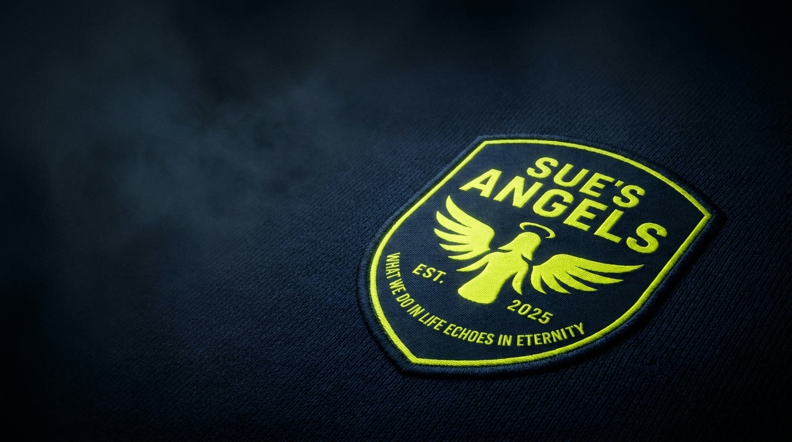

Slurred speech or confusion
Sudden disorientation, drowsiness or trouble speaking clearly.

Our cause · Sepsis awareness
Everything about this club begins with one person. We lost Susan Anne Martin to sepsis. We play, and we talk openly about it, so that fewer families have to.
Sue's story
Everything about this club begins with one person. Sue's Angels FC was founded in 2025 in memory of Susan Anne Martin, so that her name stays part of something good, week after week.
We lost Sue to sepsis. It's a loss her family and friends carry every day, and it's the reason this club exists. We play for her, and we talk openly about sepsis so that fewer people have to go through the same thing.
The facts
Sepsis is what can happen when the body's response to an infection starts to harm its own tissues and organs. It can affect anyone, at any age, and it can turn serious very quickly. That's why noticing it early matters so much.
The UK Sepsis Trust estimates sepsis takes around 48,000 lives in the UK every year. So many of those losses could have been prevented, and the biggest difference is spotting it early. That's why we keep talking about it.
Know the signs
In an adult, seek urgent medical help if any of these appear. They spell one word to remember: SEPSIS.
Sudden disorientation, drowsiness or trouble speaking clearly.
Shaking, fever, or pain that feels far worse than usual.
A clear drop in how often they go to the toilet.
Struggling for breath, or breathing very fast.
A deep, sudden sense that something is seriously wrong.
Blotchy, discoloured or unusually pale skin.
Get emergency help if a child:
For babies under 5, also look out for not feeding, repeated vomiting, or no wet nappy for 12 hours.
Trust your instinct. Just ask: could it be sepsis?
If someone is getting worse quickly, please don't wait. Sepsis is a medical emergency. If you're worried, seek urgent help and say you're concerned about sepsis.
How you can help
The signs above can save a life. Take a moment to learn them, and share them with the people you love.
See the signsThe UK Sepsis Trust supports families, funds research and raises awareness across the country. Find out more or give on their website.
Visit sepsistrust.orgBack Sue's Angels as a sponsor, partner or volunteer, and help us carry her message a little further.
Get involvedMore information and guidance: NHS sepsis guide · The UK Sepsis Trust. This page is for awareness only and is not medical advice. If you're worried, contact NHS 111 or, in an emergency, call 999.
The club's north star
Founded in 2025, in memory of Susan Anne Martin. Learn the signs, share them, and help us carry her message further.